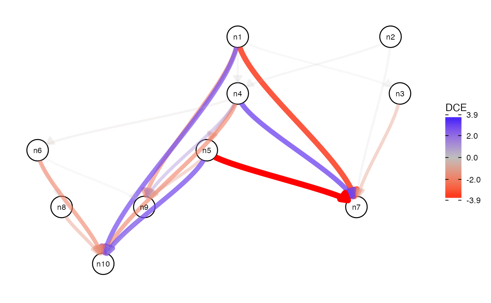

Introduction
Load required packages
Load the package with the library function.
# fix "object 'guide_edge_colourbar' of mode 'function' was not found"
# when building vignettes
# (see also https://github.com/thomasp85/ggraph/issues/75)
library(ggraph)## Loading required package: ggplot2## ── Attaching packages ─────────────────────────────────────── tidyverse 1.3.0 ──## ✔ tibble 3.0.5 ✔ dplyr 1.0.3
## ✔ tidyr 1.1.2 ✔ stringr 1.4.0
## ✔ readr 1.4.0 ✔ forcats 0.5.0
## ✔ purrr 0.3.4## ── Conflicts ────────────────────────────────────────── tidyverse_conflicts() ──
## ✖ dplyr::filter() masks stats::filter()
## ✖ dplyr::lag() masks stats::lag()## Registered S3 methods overwritten by 'RcppEigen':
## method from
## predict.fastLm RcppArmadillo
## print.fastLm RcppArmadillo
## summary.fastLm RcppArmadillo
## print.summary.fastLm RcppArmadillo
set.seed(42)Simple example
First we generate a random wild type network and then resample its edge weights to generate the mutant network.
node_num <- 10
edge_prob <- .5
graph_wt <- create_random_DAG(node_num, edge_prob)
graph_mt <- resample_edge_weights(graph_wt)
cowplot::plot_grid(
plot_network(as(graph_wt, "matrix")),
plot_network(as(graph_mt, "matrix"))
)
We can then simulate data for these two networks.
X_wt <- simulate_data(graph_wt)
X_mt <- simulate_data(graph_mt)Finally, it is possible to compute differential causal effects.
res <- dce(graph_wt, X_wt, X_mt, solver = "lm")## Warning in dce(as_adjmat(graph), df_expr_wt, df_expr_mt, solver, solver_args, :
## Cycle(s) detected in network
res %>%
as.data.frame %>%
drop_na## source target dce dce_stderr dce_pvalue
## 1 n1 n3 -0.01247250 0.01221580 3.085065e-01
## 2 n1 n4 0.05626508 0.08697680 5.184551e-01
## 3 n2 n4 0.02197863 0.08085374 7.860373e-01
## 4 n4 n5 -1.14734408 0.13204269 1.593702e-15
## 5 n4 n6 -0.13529905 0.14931727 3.660092e-01
## 6 n1 n7 -3.48839810 0.08662073 9.646663e-97
## 7 n2 n7 -0.58480388 0.27380255 3.393153e-02
## 8 n3 n7 -1.41917563 1.03396369 1.714743e-01
## 9 n4 n7 2.69814910 0.41707010 7.984052e-10
## 10 n5 n7 -0.95696959 2.11813027 6.519183e-01
## 11 n6 n8 0.03859311 0.06406200 5.475889e-01
## 12 n1 n9 -2.25011001 0.12154286 6.594217e-45
## 13 n4 n9 1.03137526 0.20028758 6.443130e-07
## 14 n5 n9 0.41747980 0.91100347 6.472759e-01
## 15 n6 n9 0.89785653 0.52191169 8.696836e-02
## 16 n1 n10 3.03994995 0.20227322 1.831267e-34
## 17 n4 n10 -1.79784713 0.34828538 6.075869e-07
## 18 n5 n10 1.57586929 1.34382087 2.423628e-01
## 19 n6 n10 -2.99128362 0.73829485 7.353657e-05
## 20 n8 n10 -0.33526927 1.74653949 8.479727e-01
## 21 n9 n10 -0.09106629 0.31227815 7.708993e-01The result can be visualized.
plot(res)
Session information
## R version 4.0.3 (2020-10-10)
## Platform: x86_64-apple-darwin17.0 (64-bit)
## Running under: macOS Catalina 10.15.7
##
## Matrix products: default
## BLAS: /Library/Frameworks/R.framework/Versions/4.0/Resources/lib/libRblas.dylib
## LAPACK: /Library/Frameworks/R.framework/Versions/4.0/Resources/lib/libRlapack.dylib
##
## locale:
## [1] en_US.UTF-8/en_US.UTF-8/en_US.UTF-8/C/en_US.UTF-8/en_US.UTF-8
##
## attached base packages:
## [1] stats graphics grDevices utils datasets methods base
##
## other attached packages:
## [1] dce_0.99.0 cowplot_1.1.1 forcats_0.5.0 stringr_1.4.0
## [5] dplyr_1.0.3 purrr_0.3.4 readr_1.4.0 tidyr_1.1.2
## [9] tibble_3.0.5 tidyverse_1.3.0 ggraph_2.0.4 ggplot2_3.3.3
## [13] BiocStyle_2.18.1
##
## loaded via a namespace (and not attached):
## [1] tidyselect_1.1.0 RSQLite_2.2.2 AnnotationDbi_1.52.0
## [4] grid_4.0.3 Rtsne_0.15 devtools_2.3.2
## [7] munsell_0.5.0 codetools_0.2-16 mutoss_0.1-12
## [10] ragg_0.4.1 statmod_1.4.35 withr_2.4.0
## [13] fastICA_1.2-2 colorspace_2.0-0 Biobase_2.50.0
## [16] knitr_1.30 rstudioapi_0.13 stats4_4.0.3
## [19] robustbase_0.93-7 gbRd_0.4-11 labeling_0.4.2
## [22] Rdpack_2.1 mnormt_2.0.2 polyclip_1.10-0
## [25] bit64_4.0.5 farver_2.0.3 rprojroot_2.0.2
## [28] vctrs_0.3.6 generics_0.1.0 TH.data_1.0-10
## [31] xfun_0.20 fastcluster_1.1.25 diptest_0.75-7
## [34] R6_2.5.0 clue_0.3-58 graphlayouts_0.7.1
## [37] RcppEigen_0.3.3.9.1 locfit_1.5-9.4 flexmix_2.3-17
## [40] RcppArmadillo_0.10.1.2.2 assertthat_0.2.1 scales_1.1.1
## [43] multcomp_1.4-15 nnet_7.3-14 gtable_0.3.0
## [46] processx_3.4.5 tidygraph_1.2.0 sandwich_3.0-0
## [49] rlang_0.4.10 systemfonts_0.3.2 splines_4.0.3
## [52] broom_0.7.3 checkmate_2.0.0 reshape2_1.4.4
## [55] abind_1.4-5 BiocManager_1.30.10 yaml_2.2.1
## [58] modelr_0.1.8 backports_1.2.1 RBGL_1.66.0
## [61] tools_4.0.3 usethis_2.0.0 bookdown_0.21
## [64] ggm_2.5 ellipsis_0.3.1 ggdendro_0.1.22
## [67] BiocGenerics_0.36.0 sessioninfo_1.1.1 plyr_1.8.6
## [70] TFisher_0.2.0 Rcpp_1.0.6 pcalg_2.7-1
## [73] ps_1.5.0 prettyunits_1.1.1 viridis_0.5.1
## [76] sfsmisc_1.1-8 S4Vectors_0.28.1 zoo_1.8-8
## [79] haven_2.3.1 ggrepel_0.9.1 cluster_2.1.0
## [82] fs_1.5.0 apcluster_1.4.8 magrittr_2.0.1
## [85] data.table_1.13.6 gmodels_2.18.1 reprex_0.3.0
## [88] tmvnsim_1.0-2 mvtnorm_1.1-1 amap_0.8-18
## [91] matrixStats_0.57.0 mnem_1.6.5 flexclust_1.4-0
## [94] pkgload_1.1.0 hms_1.0.0 evaluate_0.14
## [97] mclust_5.4.7 readxl_1.3.1 IRanges_2.24.1
## [100] gridExtra_2.3 bdsmatrix_1.3-4 testthat_3.0.1
## [103] compiler_4.0.3 ellipse_0.4.2 crayon_1.3.4
## [106] Linnorm_2.14.0 htmltools_0.5.1 corpcor_1.6.9
## [109] mgcv_1.8-33 expm_0.999-6 lubridate_1.7.9.2
## [112] DBI_1.1.1 tweenr_1.0.1 ppcor_1.1
## [115] dbplyr_2.0.0 MASS_7.3-53 fpc_2.2-9
## [118] rappdirs_0.3.1 Matrix_1.2-18 permute_0.9-5
## [121] cli_2.2.0 naturalsort_0.1.3 rbibutils_2.0
## [124] gdata_2.18.0 parallel_4.0.3 metap_1.4
## [127] igraph_1.2.6 pkgconfig_2.0.3 pkgdown_1.6.1
## [130] sn_1.6-2 numDeriv_2016.8-1.1 xml2_1.3.2
## [133] multtest_2.46.0 rvest_0.3.6 callr_3.5.1
## [136] digest_0.6.27 tsne_0.1-3 vegan_2.5-7
## [139] graph_1.68.0 rmarkdown_2.6 cellranger_1.1.0
## [142] harmonicmeanp_3.0 edgeR_3.32.1 kernlab_0.9-29
## [145] gtools_3.8.2 modeltools_0.2-23 graphite_1.36.0
## [148] lifecycle_0.2.0 nlme_3.1-149 jsonlite_1.7.2
## [151] desc_1.2.0 viridisLite_0.3.0 limma_3.46.0
## [154] fansi_0.4.2 pillar_1.4.7 lattice_0.20-41
## [157] httr_1.4.2 plotrix_3.8-1 DEoptimR_1.0-8
## [160] pkgbuild_1.2.0 survival_3.2-7 glue_1.4.2
## [163] CombinePValue_1.0 remotes_2.2.0 prabclus_2.3-2
## [166] bit_4.0.4 Rgraphviz_2.34.0 ggforce_0.3.2
## [169] class_7.3-17 stringi_1.5.3 blob_1.2.1
## [172] textshaping_0.2.1 memoise_1.1.0 FMStable_0.1-2
## [175] snowfall_1.84-6.1 mathjaxr_1.0-1 e1071_1.7-4